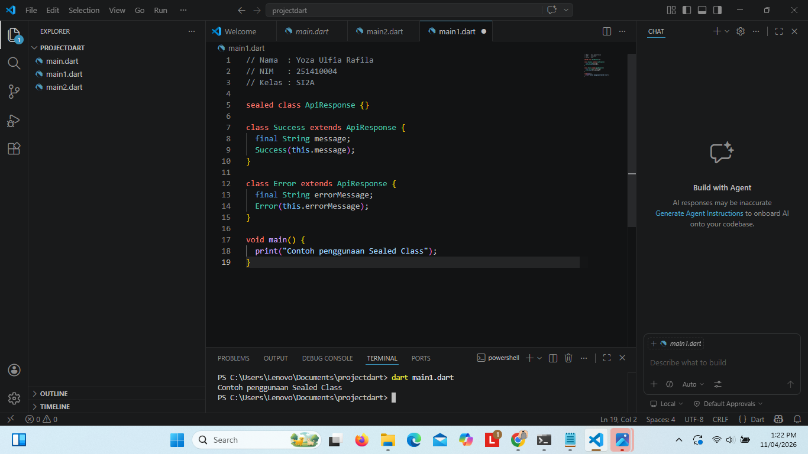
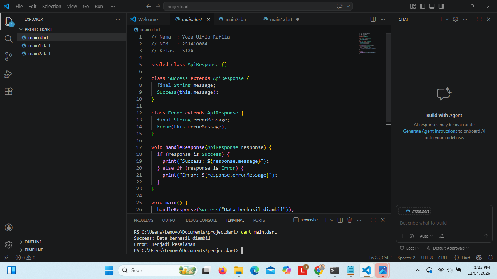
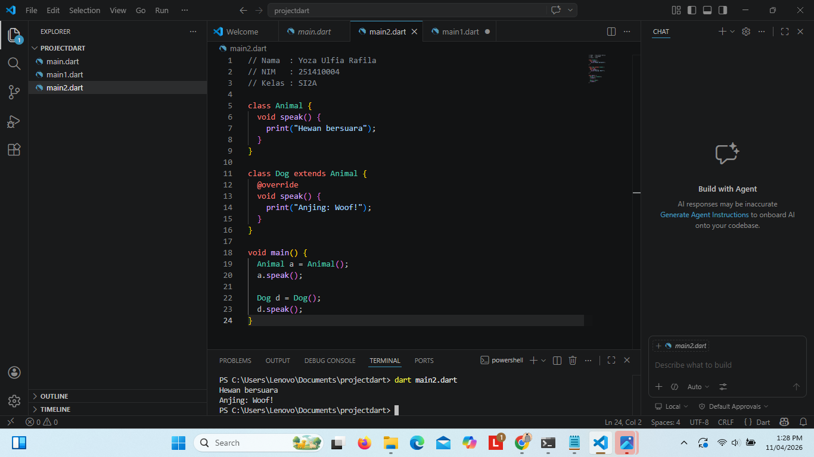
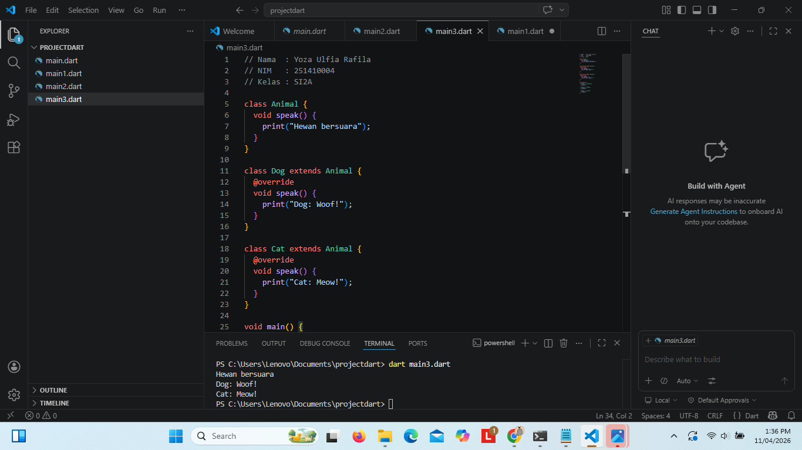
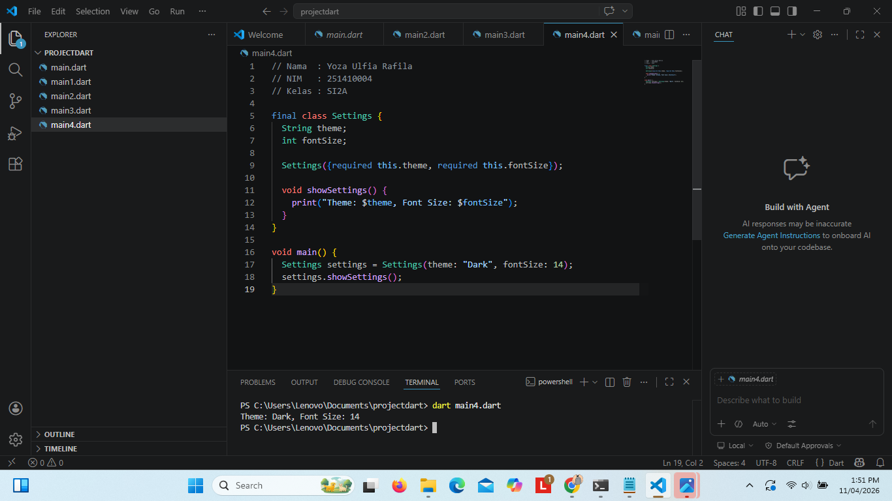
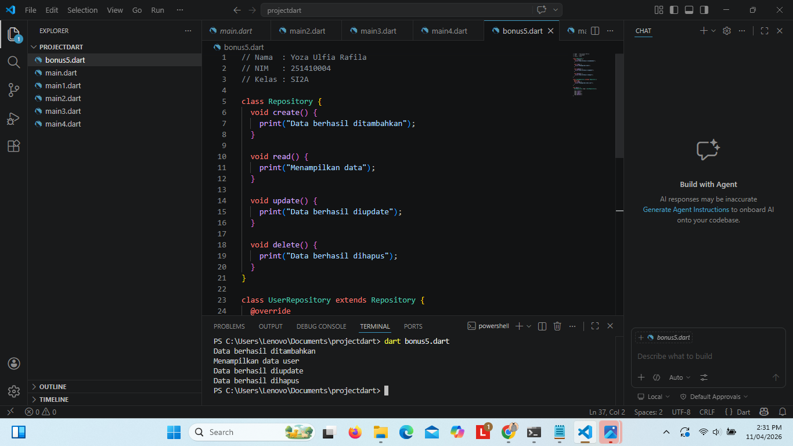
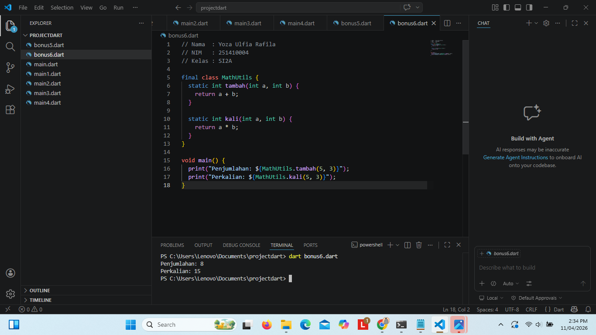

Yoza Ulpia Rafila
251410004
SI2A
// Nama : Yoza Ulpia Rafila
// NIM : 251410004
// Kelas : SI2A
sealed class ApiResponse {}
class Success extends ApiResponse {
final String message;
Success(this.message);
}
class Error extends ApiResponse {
final String errorMessage;
Error(this.errorMessage);
}
void main() {
print("Contoh penggunaan Sealed Class");
}

Pembahasan:
// Nama : Yoza Ulpia Rafila
// NIM : 251410004
// Kelas : SI2A
sealed class ApiResponse {}
class Success extends ApiResponse {
final String message;
Success(this.message);
}
class Error extends ApiResponse {
final String errorMessage;
Error(this.errorMessage);
}
void handleResponse(ApiResponse response) {
if (response is Success) {
print("Success: ${response.message}");
} else if (response is Error) {
print("Error: ${response.errorMessage}");
}
}
void main() {
handleResponse(Success("Data berhasil diambil"));
handleResponse(Error("Terjadi kesalahan"));
}

Pembahasan Polimorfisme (Method Overriding):
// Nama : Yoza Ulpia Rafila
// NIM : 251410004
// Kelas : SI2A
class Animal {
void speak() {
print("Hewan bersuara");
}
}
class Dog extends Animal {
@override
void speak() {
print("Anjing: Woof!");
}
}
void main() {
Animal a = Animal();
a.speak();
Dog d = Dog();
d.speak();
}

Pembahasan Method Overriding:
// Nama : Yoza Ulpia Rafila
// NIM : 251410004
// Kelas : SI2A
class Animal {
void speak() {
print("Hewan bersuara");
}
}
class Dog extends Animal {
@override
void speak() {
print("Dog: Woof!");
}
}
class Cat extends Animal {
@override
void speak() {
print("Cat: Meow!");
}
}
void main() {
Animal a = Animal();
a.speak();
Animal d = Dog();
d.speak();
Animal c = Cat();
c.speak();
}

Pembahasan Final Class:
// Nama : Yoza Ulpia Rafila
// NIM : 251410004
// Kelas : SI2A
final class Settings {
String theme;
int fontSize;
Settings({required this.theme, required this.fontSize});
void showSettings() {
print("Theme: $theme, Font Size: $fontSize");
}
}
void main() {
Settings settings = Settings(theme: "Dark", fontSize: 14);
settings.showSettings();
}

Pembahasan Pewarisan (Inheritance):
// Nama : Yoza Ulpia Rafila
// NIM : 251410004
// Kelas : SI2A
class Repository {
void create() {
print("Data berhasil ditambahkan");
}
void read() {
print("Menampilkan data");
}
void update() {
print("Data berhasil diupdate");
}
void delete() {
print("Data berhasil dihapus");
}
}
class UserRepository extends Repository {
@override
void read() {
print("Menampilkan data user");
}
}
void main() {
UserRepository repo = UserRepository();
repo.create();
repo.read();
repo.update();
repo.delete();
}

Pembahasan Utility Class:
// Nama : Yoza Ulpia Rafila
// NIM : 251410004
// Kelas : SI2A
final class MathUtils {
static int tambah(int a, int b) {
return a + b;
}
static int kali(int a, int b) {
return a * b;
}
}
void main() {
print("Penjumlahan: ${MathUtils.tambah(5, 3)}");
print("Perkalian: ${MathUtils.kali(5, 3)}");
}

Pembahasan Penerapan OOP Abstraksi pada Dart:
// Nama : Yoza Ulpia Rafila
// NIM : 251410004
// Kelas : SI2A
// Class Abstrak
abstract class Bentuk {
double hitungLuas();
}
// Class Persegi
class Persegi extends Bentuk {
double sisi;
Persegi(this.sisi);
@override
double hitungLuas() {
return sisi * sisi;
}
}
// Class Lingkaran
class Lingkaran extends Bentuk {
double jariJari;
Lingkaran(this.jariJari);
@override
double hitungLuas() {
return 3.14 * jariJari * jariJari;
}
}
// Class Segitiga
class Segitiga extends Bentuk {
double alas;
double tinggi;
Segitiga(this.alas, this.tinggi);
@override
double hitungLuas() {
return 0.5 * alas * tinggi;
}
}
// Program Utama
void main() {
// Objek Persegi
Persegi persegi = Persegi(4);
print("Luas Persegi: ${persegi.hitungLuas()}");
// Objek Lingkaran
Lingkaran lingkaran = Lingkaran(7);
print("Luas Lingkaran: ${lingkaran.hitungLuas()}");
// Objek Segitiga
Segitiga segitiga = Segitiga(6, 8);
print("Luas Segitiga: ${segitiga.hitungLuas()}");
}
Pembahasan Implementasi Abstraksi dalam Pemrograman:
// Nama : Yoza Ulpia Rafila
// NIM : 251410004
// Kelas : SI2A
// Class Abstrak
abstract class Burung {
void suara();
}
// Class Burung Biasa
class BurungBiasa extends Burung {
@override
void suara() {
print("Burung bersuara... Cuit cuit");
}
}
// Class Bebek
class Bebek extends Burung {
@override
void suara() {
print("Bebek bersuara... Kwek kwek");
}
}
// Program Utama
void main() {
// Penamaan variabel dibuat lebih jelas
Burung burungBiasa = BurungBiasa();
Burung bebek = Bebek();
burungBiasa.suara();
bebek.suara();
}
Pembahasan Penggunaan Mixin pada Dart:
// Nama : Yoza Ulpia Rafila
// NIM : 251410004
// Kelas : SI2A
// Mixin dengan properti (state)
mixin CanFly {
bool _isFlying = false;
bool get isFlying => _isFlying;
void fly() {
if (!_isFlying) {
_isFlying = true;
print("Started flying!");
} else {
print("Already flying!");
}
}
void land() {
if (_isFlying) {
_isFlying = false;
print("Landed!");
} else {
print("Already on the ground!");
}
}
}
mixin CanSwim {
bool _isSwimming = false;
bool get isSwimming => _isSwimming;
void swim() {
if (!_isSwimming) {
_isSwimming = true;
print("Started swimming!");
} else {
print("Already swimming!");
}
}
void stopSwim() {
if (_isSwimming) {
_isSwimming = false;
print("Stopped swimming!");
} else {
print("Already stopped swimming!");
}
}
}
// Class dengan mixin (yang benar secara konsep OOP)
class Bird with CanFly {}
class Duck with CanFly, CanSwim {}
class Fish with CanSwim {}
class Airplane with CanFly {}
void main() {
print("=== Bird ===");
Bird bird = Bird();
bird.fly();
bird.land();
print("\n=== Duck ===");
Duck duck = Duck();
duck.fly();
duck.swim();
duck.stopSwim();
print("\n=== Fish ===");
Fish fish = Fish();
fish.swim();
print("\n=== Airplane ===");
Airplane airplane = Airplane();
airplane.fly();
}
Pembahasan Implementasi Sealed Class dengan Pattern Matching pada Dart:
// Nama : Yoza Ulpia Rafila
// NIM : 251410004
// Kelas : SI2A
// Sealed class
sealed class Status {
const Status();
}
class Loading extends Status {
const Loading();
}
class Loaded extends Status {
final String data;
const Loaded(this.data);
}
class Failed extends Status {
final String error;
const Failed(this.error);
}
// Function handle status
void handleStatus(Status status) {
switch (status) {
case Loading():
print("Loading...");
return;
case Loaded(:final data):
print("Data: $data");
return;
case Failed(:final error):
print("Error: $error");
return;
}
}
void main() {
handleStatus(const Loading());
handleStatus(const Loaded("Data berhasil"));
handleStatus(const Failed("Terjadi error"));
}
Pembahasan Studi Kasus State Management Menggunakan Sealed Class pada Dart:
// Nama : Yoza Ulpia Rafila
// NIM : 251410004
// Kelas : SI2A
// Sealed class
sealed class AppState {
const AppState();
}
// State Loading
class LoadingState extends AppState {
const LoadingState();
}
// State Success
class SuccessState extends AppState {
final List items;
const SuccessState(this.items);
}
// State Error
class ErrorState extends AppState {
final String message;
const ErrorState(this.message);
}
// Handler (Pattern Matching)
void updateUI(AppState state) {
switch (state) {
case LoadingState():
showLoading();
break;
case SuccessState(:final items):
showItems(items);
break;
case ErrorState(:final message):
showError(message);
break;
}
}
// UI Functions
void showLoading() {
print("⏳ Loading...");
}
void showItems(List items) {
print("✅ Success! Items:");
for (int i = 0; i < items.length; i++) {
print("${i + 1}. ${items[i]}");
}
}
void showError(String message) {
print("❌ Error: $message");
}
// Main Program
void main() {
updateUI(const LoadingState());
updateUI(const SuccessState([
"Item A",
"Item B",
"Item C"
]));
updateUI(const ErrorState("Gagal memuat data"));
}
Dari seluruh pembahasan yang telah dilakukan, dapat disimpulkan bahwa:
Demikian pembahasan mengenai konsep Object-Oriented Programming (OOP) dan class modifier dalam bahasa Dart. Diharapkan materi ini dapat memberikan pemahaman yang lebih baik dalam membangun program yang terstruktur dan efisien.
Penulis menyadari bahwa masih terdapat kekurangan dalam penyusunan tugas ini, sehingga kritik dan saran yang membangun sangat diharapkan untuk perbaikan ke depannya.
Semoga tugas ini bermanfaat dan dapat menjadi referensi dalam mempelajari konsep OOP di masa mendatang.